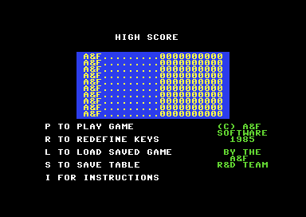
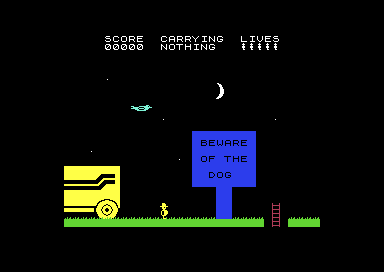
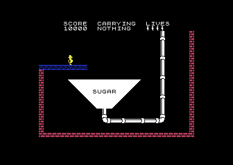
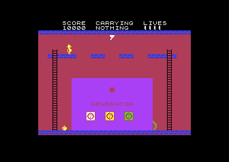

<meta charset="utf-8">
<meta name="viewport" content="width=device-width, initial-scale=1">
<title>{{title}}</title>
<link rel="preconnect" href="https://fonts.googleapis.com">
<link rel="stylesheet" href="https://fonts.googleapis.com/css2?family=Lato:wght@400;700;900&family=IBM+Plex+Mono:wght@400;500&display=swap">
<style>
:root{
  --bg:#23262d; --paper:#e9e7e1; --surface:#ffffff; --surface-2:#f1efea; --line:#d5d3cc; --line-soft:#e0ded8;
  --ink:#2f3136; --ink-soft:#55585f; --ink-mute:#80838a;
  --link:#1f5fa8; --link-hover:#154480; --accent:#1f5fa8;
  --amber:#c25a00; --cyan:#1f5fa8; --coral:#d04a3a; --green:#2a8a4a; --violet:#4a5bd6; --hl:#fff0c2;
  --chip:#2f3136; --chip-ink:#ffffff;
  --c64blue:#40318d; --c64grey:#686868;
  --fd:'Lato',system-ui,sans-serif; --fb:'Lato',system-ui,sans-serif; --fm:'IBM Plex Mono',ui-monospace,Menlo,monospace;
  --col:1080px; --gx:68px; --fs:17px; --lh:1.6; --hw:900; --h1:46px; --h2:26px; --sy:48px; --pp:26px; --r:10px;
  --plate-shadow:0 1px 2px rgba(0,0,0,.05),0 4px 14px rgba(0,0,0,.05);
}
*{box-sizing:border-box}
html{background:var(--bg);min-height:100%}
body{background:var(--paper);color:var(--ink);font-family:var(--fb);font-size:var(--fs);line-height:var(--lh);max-width:var(--col);margin:0 auto;min-height:100vh;padding:0 0 4rem}
h1,h2,h3{font-weight:var(--hw);letter-spacing:-.01em;text-wrap:balance;color:var(--ink);margin:0}
.wrap{padding:0 var(--gx)}
.hero{padding:48px var(--gx) 8px;text-align:left}
.eyebrow{font-family:var(--fm);font-size:12px;letter-spacing:.08em;text-transform:uppercase;color:var(--ink-mute);margin:0 0 10px}
.hero h1{font-size:var(--h1);line-height:1.15;letter-spacing:-.02em;margin:0 0 14px}
.hero .sub{margin:0 0 .6em;color:var(--ink-soft)}
section{padding:var(--sy) 0 24px}
section:last-of-type{border-bottom:none}
.fig{font-family:var(--fm);font-size:12px;letter-spacing:.08em;text-transform:uppercase;color:var(--ink-mute);margin:0 0 10px}
h2.t{font-size:var(--h2);margin-bottom:12px}
.lede{color:var(--ink-soft);margin:0 0 30px}
.plate{background:var(--surface);border:1px solid var(--line);border-radius:var(--r);padding:var(--pp);box-shadow:var(--plate-shadow)}
.cap{font-size:14px;color:var(--ink-mute);margin-top:14px;line-height:1.55}
.cap b{color:var(--ink);font-weight:700}
code{font-family:var(--fm);font-size:.82em;background:var(--chip);color:var(--chip-ink);border-radius:4px;padding:2px 6px;overflow-wrap:break-word;-webkit-box-decoration-break:clone;box-decoration-break:clone}

.mapgrid{display:grid;grid-template-columns:repeat(10,1fr);gap:3px;background:#111;padding:3px;border-radius:6px}
.mapgrid canvas{width:100%;height:auto;cursor:pointer;display:block}
.mapgrid canvas.on{outline:3px solid var(--amber)}
.ctl{display:flex;flex-wrap:wrap;gap:12px;align-items:center;margin:12px 0;font-size:14px}

.legend{display:flex;flex-wrap:wrap;gap:10px;font-size:13px;color:var(--ink-soft);margin-top:8px}
.legend i{display:inline-block;width:12px;height:12px;border-radius:2px;margin-right:4px;vertical-align:-1px}
table.t{border-collapse:collapse;font-size:15px;margin:10px 0}
table.t td,table.t th{border-bottom:1px solid var(--line-soft);padding:4px 10px;text-align:left}
</style>
<!-- tabs -->
<header class="hero">
  <p class="eyebrow">{{year}} · {{publisher}}</p>
  <h1>{{title}}</h1>
  <p class="sub">A 120-room factory, drawn by a little program for each room, with every colour stored as a ZX Spectrum colour. Inside the memory image sits a page of the authors' own BBC BASIC source.</p>
</header>
<main class="wrap">

<section id="game">
  <p class="fig">01 · The game</p>
  <h2 class="t">Hen-House Harry makes an Easter egg</h2>
  <p class="lede">Harry has to make a giant chocolate egg in a factory of 120 rooms. He collects eight bags each of cocoa, milk and sugar and drops each into its vat. He also collects the eight cyan parts of a toy kit and drops them into the toy maker. Then he takes the finished egg to dispatch.</p>
  <div class="plate" style="display:flex;gap:18px;flex-wrap:wrap">
    
    
    <p class="cap">The title screen, and room 1 just after the van has dropped Harry off. Screenshots from VICE.</p>
  </div>
  <p>Harry walks, jumps, and climbs ladders and chains. Creatures patrol the rooms, and touching most of them costs a life. He can carry one thing at a time, unless he finds a basket. Each finished egg sends him round again with more creatures and a different toy. The game saves to tape whenever Harry is walking or on a ladder, and it saves the high-score table too.</p>
</section>

<section id="rooms">
  <p class="fig">02 · A room is a little program</p>
  <h2 class="t">Watch a room draw itself</h2>
  <p class="lede">The game keeps no pictures of its rooms. Each room is a short list of drawing commands, between 30 and 300 bytes, which a small interpreter at <code>$4000</code> runs whenever Harry enters it.</p>
  <div class="plate">
    <div class="ctl"><label>Room <input type="number" id="ce2-r" min="1" max="120" value="115" style="width:5em"></label>
      <label>Commands drawn <input type="range" id="ce2-k" min="0" max="40" value="40" style="width:220px"></label> <span id="ce2-kn"></span>
      <label><input type="checkbox" id="ce2-ov"> Show what each cell is</label></div>
    <canvas id="ce2-room"></canvas>
    <div class="legend" id="ce2-legend"></div>
    <p class="cap" id="ce2-cap">Drawn on this page by a port of the game's drawing code, from the room's record in the game's memory. Drag the slider to run the commands one at a time. <code>test_rooms.js</code> holds the port to the game's own code for all 120 rooms.</p>
  </div>
  <p>A command byte below <code>$20</code> picks one of eleven commands from the table at <code>$4072</code>: the end of the room, a filled block, a line of text, four pipe bends, a framed block, a rising slope, a falling slope and a single character. A byte from <code>$20</code> to <code>$2B</code> draws a pipe with end caps. Any higher byte is a character, and the bytes after it say where to draw a line of it, how long, and which way. Each command carries its own colour.</p>
  <p>The colours are ZX Spectrum colour numbers: 1 is blue, 2 red, 6 yellow. The C64 numbers its colours in another order, so the drawing code turns every colour through a table of eight entries at <code>$4088</code>. The rooms were almost certainly carried over from the Spectrum version as data. A colour that matches the room's background would vanish, so a command can carry a second colour in the same byte for that case (<code>$4090</code>).</p>
  <p>The <a href="levels.html">Maps</a> tab draws all 120 rooms side by side.</p>
</section>

<section id="cells">
  <p class="fig">03 · What Harry stands on</p>
  <h2 class="t">A hidden second screen</h2>
  <p class="lede">Every drawing command also writes into a property map at <code>$1700</code>, one byte for each cell of the screen. Harry's movement never looks at the characters on the screen. It looks at the property map.</p>
  <table class="t"><tr><th>Bit</th><th>Means</th><th>Drawn on</th></tr>
  <tr><td><code>$01</code></td><td>a platform: Harry can stand on it</td><td>floors and girders</td></tr>
  <tr><td><code>$02</code></td><td>a ladder</td><td>characters <code>$33</code> and <code>$34</code>, and the green ladder Harry can carry</td></tr>
  <tr><td><code>$10</code></td><td>a chain: climbed at half speed</td><td>character <code>$35</code></td></tr>
  <tr><td><code>$20</code></td><td>a slippery pipe: Harry falls off if he stands still</td><td>some pipes; others carry no bit and are only scenery</td></tr>
  <tr><td><code>$04</code>, <code>$08</code></td><td>a slope rising or falling to the right</td><td>the diagonal commands</td></tr>
  <tr><td><code>$40</code></td><td>something Harry can pick up</td><td>the pick-ups</td></tr>
  <tr><td><code>$80</code></td><td>deadly</td><td>spikes, flames and the vats' contents</td></tr></table>
  <p>Tick <em>Show what each cell is</em> above to see the map over the room. The instructions hint that some pipes are more slippery than others. This is the reason: the same pipe characters are drawn with bit <code>$20</code> in some rooms, bit <code>$01</code> in others, and no bit at all where they are only decoration. Standing still on a pipe with <code>$20</code> starts a fall (<code>$4E96</code>). Set the room above to 47 and tick the box to see them: rooms 27 to 29, 37 to 39, 47 to 49 and 104 have slippery pipes, and so do the train rooms.</p>
  <p>Harry's state, at <code>$B8</code>, picks one of nine routines from a table at <code>$5590</code>: falling, walking, on a slippery pipe, on a ladder, on a chain, on a slope, turning on a slope, jumping and riding a lift.</p>
</section>

<section id="jump">
  <p class="fig">04 · The jump</p>
  <h2 class="t">Sixteen pixels up, and shorter with a basket</h2>
  <p class="lede">A jump follows a fixed table of heights at <code>$55AE</code>, one entry for each turn of the main loop. Harry keeps moving sideways at the speed he was walking.</p>
  <div class="plate">
    <div class="ctl"><label><input type="radio" name="ce2-j" value="0" checked> Empty-handed</label><label><input type="radio" name="ce2-j" value="3"> Carrying a basket</label><label><input type="checkbox" id="ce2-jw" checked> Walking right</label></div>
    <canvas id="ce2-jump"></canvas>
    <p class="cap" id="ce2-jcap">Each dot is Harry's position after one turn of the main loop, over a grid of character cells, from the table in the game's memory.</p>
  </div>
  <p>The table rises 4, 4, 3, 2, 1, 1 and 1 pixels, stays level for four steps, drops 1, 1, 1, 2 and 3 pixels, then drops 4 pixels a step. After 21 steps the jump turns into a fall (<code>$50ED</code>). The table holds a 22nd entry that the game never reaches. Carrying a basket starts the jump at the table's fourth entry, so Harry rises only 5 pixels (<code>$5095</code>). A fall moves Harry down 4 pixels a step, and the game counts the steps (<code>$4FC9</code>). Landing after 15 or more of them kills him (<code>$5111</code>): a drop of about 60 pixels, seven and a half character rows. A jump that turns into a fall starts the count at 5, so 40 pixels of fall after it are enough.</p>
</section>

<section id="egg">
  <p class="fig">05 · Making the egg</p>
  <h2 class="t">Four vats, eight of everything</h2>
  <p class="lede">Each ingredient has a counter that starts at 8: toy parts at <code>$0F</code>, milk at <code>$10</code>, cocoa at <code>$11</code> and sugar at <code>$12</code>. An item dropped over a vat falls in one row at a time and takes 1 off its counter.</p>
  <div class="plate" style="display:flex;gap:18px;flex-wrap:wrap">
    
    
    <p class="cap">Room 110, the sugar vat, and room 115, the generator with the factory's power switch. Screenshots from VICE.</p>
  </div>
  <table class="t"><tr><th>Room</th><th>Vat</th><th>Takes</th></tr>
  <tr><td>33</td><td>milk</td><td>milk, and the milk basket</td></tr>
  <tr><td>51</td><td>cocoa</td><td>cocoa, and the cocoa basket</td></tr>
  <tr><td>110</td><td>sugar</td><td>sugar, and the sugar basket</td></tr>
  <tr><td>95</td><td>toy maker</td><td>toy parts, and the toy-part basket</td></tr></table>
  <p>Each vat's check is looser than the table above: a vat also takes the ingredients that come before its own in the order toy parts, milk, cocoa, sugar (<code>$746B</code>). The <a href="discoveries.html#vats">Discoveries</a> tab shows what that does. A full vat shows its sign and gives Harry an extra life. Making the toy gives another (<code>$76F7</code>), and so does delivering the egg (<code>$4A81</code>).</p>
  <p>The factory needs power, as the instructions hint. The switch is in room 115, the generator (<code>$6C64</code>). Facing right at it turns the power on, and facing left turns it off. With the power on, the toy maker makes the toy once all eight parts are in, and the egg appears once the toy and all 24 bags are in. The trains and lifts run only while the power is on. The switch also becomes Harry's restart point.</p>
  <p>Each egg brings more creatures. The creature list at <code>$7C00</code> holds 256 creatures, each with a room, a place and a type. The game looks only at the first part of the list, and the table at <code>$5D58</code> says how much (<code>$5B00</code>):</p>
  <table class="t"><tr><th>Egg</th><th>1</th><th>2</th><th>3</th><th>4</th><th>5</th><th>6 and on</th></tr>
  <tr><td>Creatures in the list</td><td>155</td><td>180</td><td>205</td><td>230</td><td>255</td><td>256</td></tr></table>
  <p>The toy changes too: four sets of pictures at <code>$7BA7</code> give each egg its own toy and toy parts, and the fifth egg repeats the first (<code>$7B75</code>).</p>
  <p>Creatures choose their moves with random numbers from a 32-bit shift register (<code>$64D2</code>), which is seeded with 1, 2, 3 and 4 at the start of every game, so each game starts the same sequence. Touching most creatures costs a life, but some throw Harry into a jump instead (<code>$7A00</code>). Losing a life sends whatever Harry carries back to where it came from, except the toy and the egg (<code>$7875</code>). A pick-up scores its value times the egg number (<code>$6AB2</code>), so the same bag is worth more on each egg.</p>
</section>

<section id="sound">
  <p class="fig">06 · The sound</p>
  <h2 class="t">One tune, and the game stops to play it</h2>
  <p class="lede">The game has one tune, sixteen notes long. It plays when Harry loses a life. While it plays, everything else stops.</p>
  <div class="plate"><div id="ce2-sid"></div>
  <p class="cap">The game's own tune routine, <code>$1140</code>, run on a 6502 in this page and played through a model of the SID. <code>test_music.js</code> checks that it makes the same writes to the sound chip, on the same cycles, as the routine in the game.</p></div>
  <p>The routine at <code>$11A7</code> plays one note on voice 1 as a sawtooth, then counts down in an empty loop for the note's length, then plays the next. The tune's notes and lengths are at <code>$1149</code>, and the frequencies at <code>$C780</code>. The interrupt plays no music, so the whole game waits until the routine returns.</p>
  <p>Harry's footsteps are the game's only other sound. Each turn of the main loop switches voice 1 on or off as noise, at a pitch that depends on what he is doing: walking, climbing, on a slope or in the air (<code>$C92D</code>). The game never uses voices 2 and 3.</p>
</section>

<section id="controls">
  <p class="fig">07 · Controls and saving</p>
  <h2 class="t">Port 2, eight keys, and a 1 KB save</h2>
  <p>The routine at <code>$8750</code> reads the joystick in control port 2, and then eight keys from a table at <code>$8890</code>. The default keys are A, Z, comma and full stop for up, down, left and right, SPACE to jump, CTRL to take or drop, F1 to abort and F7 to save. Holding down and fire together on the joystick takes or drops. The instructions say port 1, which is wrong: see <a href="discoveries.html#port">Discoveries</a>.</p>
  <p>Saving gathers eleven pieces of memory into one 1 KB buffer at <code>$F800</code> and writes it with the game's own fast tape routine (<code>$F113</code>): the variables, the rooms Harry has visited, his position and restart point, where every pick-up lies, the keys and the high-score table. "Save table" writes the same file. Loading it back runs a routine stored with it, <code>$F242</code>, which copies the pieces back and puts Harry where he was.</p>
</section>
</main>
<script src="../../lib/c64.js"></script>
<script src="../../lib/sid.js"></script>
<script src="../../lib/cpu6502.js"></script>
<script>
/* ce2-rooms */
// A port of the game's room drawing: room_clear ($4667), draw_room ($4000) with its eleven
// commands (room_cmd_table, $4072), plot_cell ($4620), and the pick-ups (place_pickups $5600,
// draw_pickup $5664). It reads the game's own bytes from the listing (C64.load) and returns the
// screen, colour RAM and property map ($1700) the game builds, and the character set with the
// pick-ups' pictures copied into it from $0AE8. test_rooms.js holds it to the game's code run on
// the kit's 6502 for all 120 rooms.
function ce2Rooms(ram) {
  const SPEC = [0, 6, 2, 4, 5, 3, 7, 1];                       // spectrum_colour, $4088
  const rd = (a) => ram[a & 0xFFFF];
  const word = (a) => rd(a) | rd(a + 1) << 8;
  // The object table as a new game leaves it: game_state_init clears bit 7 of every room byte,
  // then puts back entries $00-$39 from the master copy objects_backup made of them at start-up.
  function objectsAtStart() {
    const rooms = new Uint8Array(256);
    for (let i = 0; i < 256; i++) rooms[i] = i <= 0x39 ? rd(0x8200 + i) : rd(0x8200 + i) & 0x7F;
    return rooms;
  }
  function draw(room, objRooms, limit = Infinity) {
    const scr = new Uint8Array(1000).fill(0x37), col = new Uint8Array(1000), prop = new Uint8Array(1000);
    const chars = ram.slice(0x0800, 0x1000);
    let colour = 0, attr = 0;
    const plot = (ch, x, y) => {                                 // plot_cell
      const o = y * 40 + x;
      if (o < 0 || o >= 1000) return;
      col[o] = colour; scr[o] = ch;
      if (attr) prop[o] |= attr;
    };
    // room_clear: the frame of char_block in colour 0
    attr = 0; colour = 0;
    for (let x = 0; x < 80; x++) { col[x] = 0; scr[x] = 0x3A; }
    for (let y = 0; y < 24; y++) for (const x0 of [0, 36]) for (let x = x0; x < x0 + 4; x++) plot(0x3A, x, y);
    for (let x = 0; x < 40; x++) { col[960 + x] = 0; scr[960 + x] = 0x3A; }
    // draw_room
    let p = word(0x9000 + room * 2);
    const bg = (rd(p) >> 3) & 7;                                 // room_bg_code
    const setColour = (c) => { colour = SPEC[c & 7]; };          // set_colour
    const pick = (c) => ((c & 7) === bg ? c >> 3 : c);           // the second colour
    let i = 1;
    const b = () => rd(p + i++);
    let done = 0;
    for (let guard = 0; guard < 400; guard++) {
      const c = b();
      if (c === 0) break;
      if (done++ >= limit) return { scr, col, prop, chars, bg: SPEC[bg], commands: done - 1, partial: true };
      if (c >= 0x2C) {                                           // room_cmd_run
        setColour(pick(b())); const row = b(), cx = b() + 4, len = b(); attr = b();
        let x = cx, y = row;
        for (let n = len & 0x7F; n > 0; n--) { plot(c, x, y); if (len & 0x80) y++; else x++; }
        continue;
      }
      if (c >= 0x20) {                                           // room_cmd_capped_run
        setColour(b()); const row = b(), cx = b() + 4, len = b(), caps = b(); attr = b();
        const down = len & 0x80, joint = down ? 0x23 : 0x22;
        let n = len & 0x7F, x = cx, y = row, phase = 0;
        const step = () => { if (down) y++; else x++; };
        plot((caps >> 4) | 0x20, x, y); step();
        if (n >= 4) {
          n -= 3;
          do { phase = (phase + 1) & 3; plot(phase === 1 ? joint : c, x, y); step(); } while (--n);
        }
        plot(joint, x, y); step();
        plot((caps & 15) | 0x20, x, y);
        continue;
      }
      switch (c) {
        case 1: {                                                // room_cmd_block
          setColour(b() >> 3); let row = b(); const cx = b() + 4, h = b(), w = b(); attr = b();
          for (let r = 0; r < h; r++, row++) for (let k = 0; k < w; k++) plot(0x3A, cx + k, row);
          break;
        }
        case 2: {                                                // room_cmd_text
          setColour(b() >> 3); const row = b(); let x = b() + 4;
          for (let ch = b(); ch !== 0x80; ch = b()) plot(ch | 0x80, x++, row);
          break;
        }
        case 3: case 4: case 5: case 6: {                        // the four pipe bends
          setColour(b()); let y = b(), x = b() + 4; attr = b();
          if (c === 3) { plot(0x21, x, y); x--; plot(0x22, x, y); x--; plot(0x26, x, y); y++; plot(0x23, x, y); y++; plot(0x20, x, y); }
          if (c === 4) { plot(0x21, x, y); x++; plot(0x22, x, y); x++; plot(0x27, x, y); y++; plot(0x23, x, y); y++; plot(0x20, x, y); }
          if (c === 5) { plot(0x20, x, y); y++; plot(0x23, x, y); y++; plot(0x24, x, y); x++; plot(0x22, x, y); x++; plot(0x21, x, y); }
          if (c === 6) { plot(0x20, x, y); y++; plot(0x23, x, y); y++; plot(0x25, x, y); x--; plot(0x22, x, y); x--; plot(0x21, x, y); }
          break;
        }
        case 7: {                                                // room_cmd_frame
          setColour(b()); let y = b(), x = b() + 4; let h = b(), w = b(); attr = 0x80;
          for (; h > 0; h--) {
            let xx = x; plot(0x38, xx++, y);
            for (let k = w - 1; k > 0; k--) plot(0x3A, xx++, y);
            plot(0x39, xx - 1, y);
            w -= 2; x += 1; y += 1;
          }
          break;
        }
        case 8: {                                                // room_cmd_rise
          setColour(b()); let y = b(), x = b() + 4, n = b(); attr = b();
          for (;;) { plot(0x55, x, y); if (--n === 0) break; x++; plot(0x39, x, y); y--; }
          break;
        }
        case 9: {                                                // room_cmd_fall
          setColour(b()); let y = b(), x = b() + 4, n = b(); attr = b();
          plot(0x54, x, y); y++; n--;
          for (; n > 0; n--) { plot(0x38, x, y); x++; plot(0x54, x, y); y++; }
          break;
        }
        case 10: {                                               // room_cmd_char
          const cc = b(); setColour(pick(cc)); const ch = b(), row = b(), x = b() + 4; attr = b();
          plot(ch, x, row);
          break;
        }
        default: return null;
      }
    }
    // place_pickups and draw_pickup
    let next = 0;
    for (let e = 0; e < 0xFF; e++) {
      if (objRooms[e] !== room) continue;
      const row0 = rd(0x8300 + e), col0 = rd(0x8400 + e) + 4, shape = rd(0x8500 + e) * 3;
      colour = rd(0x57B6 + rd(0x8600 + shape));                  // the table copy at $57B6
      const g = rd(0x8601 + shape);
      attr = g === 0x0D ? 0x02 : g === 0x0C ? 0x01 : 0;
      if (e < 0x2D) attr |= 0x40;
      const bm = word(0x576C + g * 2), h = rd(bm), w = rd(bm + 1);
      const n = h * w * 8;
      const x0 = (next * 8) & 0xFF;                               // an 8-bit index: the copy wraps
      for (let k = 0; k < (n & 0xFF); k++) chars[0x2E8 + ((x0 + k) & 0xFF)] = rd(bm + 2 + k);
      for (let r = 0; r < h; r++) for (let x = 0; x < w; x++) plot((next++ + 0x5D) & 0xFF, col0 + x, row0 + r);
    }
    return { scr, col, prop, chars, bg: SPEC[bg], commands: done };
  }
  return { draw, objectsAtStart, SPEC };
}
// end of ce2-rooms
</script>
<script>
/* ce2-view */
// Drawing for the room pages: a room from the ce2-rooms port onto a canvas, rows 0-1 (the status
// line) black, the play area on the room's background, and on request the property map over it.
const CE2_PROPS = [[0x80, '#ff3b30', 'deadly'], [0x02, '#34c759', 'ladder'], [0x10, '#30b0c7', 'chain'],
  [0x20, '#ff9f0a', 'slippery pipe'], [0x04, '#bf5af2', 'rising slope'], [0x08, '#bf5af2', 'falling slope'],
  [0x01, '#ffd60a', 'platform'], [0x40, '#8e8e93', 'something to pick up']];
function ce2Paint(ctx, got, s, overlay) {
  const P = C64.PAL;
  ctx.fillStyle = P[0]; ctx.fillRect(0, 0, 320 * s, 200 * s);
  ctx.fillStyle = P[got.bg]; ctx.fillRect(0, 16 * s, 320 * s, 184 * s);
  for (let o = 80; o < 1000; o++) {
    const x = (o % 40) * 8 * s, y = Math.floor(o / 40) * 8 * s;
    C64.drawGlyph(ctx, got.chars, got.scr[o], x, y, s, P[got.col[o] & 15]);
  }
  if (!overlay) return;
  ctx.globalAlpha = 0.55;
  for (let o = 80; o < 1000; o++) {
    const v = got.prop[o]; if (!v) continue;
    const hit = CE2_PROPS.find(([b]) => v & b);
    ctx.fillStyle = hit[1];
    ctx.fillRect((o % 40) * 8 * s, Math.floor(o / 40) * 8 * s, 8 * s, 8 * s);
  }
  ctx.globalAlpha = 1;
}
const CE2_NOTES = {1: 'the start: the van brings Harry here', 2: 'the dog, which wants its bone', 26: 'a lift that never stops',
  34: 'a lift that carries Harry down', 55: 'a lift that never stops', 95: 'the toy maker', 96: 'the girder bridge',
  104: 'a lift that carries Harry down', 105: 'the machine that changes as Harry walks in', 33: 'the milk vat',
  51: 'the cocoa vat', 110: 'the sugar vat', 111: 'dispatch, where the egg goes', 115: 'the generator: the power switch',
  120: 'the big creature'};
for (let r = 71; r <= 80; r++) CE2_NOTES[r] = CE2_NOTES[r] || 'on the train track';
// end of ce2-view
</script>
<script>
/* ce2-music */
// createDriver for C64Sid: runs the game's own tune routine, play_tune ($1140), on the kit's
// 6502 (C64Cpu, which sid.js hands in), a PAL frame's worth of cycles (19,656) for each call of
// play(). The game plays its tune in one call that waits in delay loops between notes; here the
// same instructions run, cut into frames, and every write to the SID lands on the cycle it was
// made. data.mem holds the bytes it needs, from the listing: $1140-$11F7 (the routine, the tune
// and sid_init) and $C780-$C7B3 (note_table). test_music.js holds it to the game's own code.
const CE2_MUSIC_RANGES = [[0x1140, 0x11F7], [0xC780, 0xC7B3]];
function createDriver(D, C64Cpu) {
  const FRAME = 19656;
  const drv = { sid: new Uint8Array(25), writes: [], times: [] };
  let cpu = null, done = true, start = 0, frame = 0;
  drv.init = function () {
    const m = new Uint8Array(0x10000);
    for (const [a, bytes] of D.mem) for (let i = 0; i < bytes.length; i++) m[a + i] = bytes[i];
    m[0xC000] = 0x20; m[0xC001] = 0x40; m[0xC002] = 0x11;        // JSR play_tune
    m[0xC003] = 0x4C; m[0xC004] = 0x03; m[0xC005] = 0xC0;        // then wait here: the tune has ended
    const io = {
      read() { return 0; },
      write(a, v) {
        if (a < 0xD400 || a > 0xD418) return;
        drv.sid[a - 0xD400] = v; drv.writes.push(a - 0xD400, v); drv.times.push(cpu.cycles - start);
      },
    };
    cpu = new C64Cpu.CPU(m, { port: 0x35, io });
    cpu.pc = 0xC000; cpu.cycles = 0; frame = 0; done = false;
  };
  drv.stop = function () { done = true; drv.sid[4] &= 0xFE; };
  drv.playing = function () { return !done; };
  drv.play = function () {
    drv.writes = []; drv.times = [];
    if (done) return;
    start = frame++ * FRAME;                                     // frames on a fixed grid of cycles
    while (cpu.cycles - start < FRAME) {
      cpu.step();
      if (cpu.pc === 0xC003) { done = true; break; }
    }
  };
  return drv;
}
// end of ce2-music
</script>
<script>
C64.load().then((L) => {
  const R = ce2Rooms(L.ram), objs = R.objectsAtStart();
  const cv = document.getElementById('ce2-room'); C64.canvas(cv, 640, 400); cv.style.width = '100%'; cv.style.height = 'auto';
  const rIn = document.getElementById('ce2-r'), kIn = document.getElementById('ce2-k'), ov = document.getElementById('ce2-ov');
  document.getElementById('ce2-legend').innerHTML = CE2_PROPS.map(([b, c, n]) => `<span><i style="background:${c}"></i>${n}</span>`).join('');
  let room = 115, full = R.draw(room, objs);
  function redraw() {
    const k = +kIn.value, got = k >= full.commands ? full : R.draw(room, objs, k);
    ce2Paint(cv.getContext('2d'), got, 2, ov.checked);
    document.getElementById('ce2-kn').textContent = (k >= full.commands ? full.commands : k) + ' of ' + full.commands + (k >= full.commands ? ', then the pick-ups' : '');
  }
  function pick() {
    room = Math.max(1, Math.min(120, +rIn.value || 1)); full = R.draw(room, objs);
    kIn.max = full.commands; kIn.value = full.commands; redraw();
  }
  rIn.oninput = pick; kIn.oninput = redraw; ov.onchange = redraw; pick();
  // the jump, from jump_profile ($55AE)
  const J = document.getElementById('ce2-jump'), S = 3; C64.canvas(J, 70 * S * 2, 46 * S); J.style.maxWidth = '100%';
  function jump() {
    const start = +document.querySelector('input[name=ce2-j]:checked').value, dx = document.getElementById('ce2-jw').checked ? 1 : 0;
    const c = J.getContext('2d'); c.fillStyle = '#1b1d22'; c.fillRect(0, 0, J.width, J.height);
    c.strokeStyle = '#33363d'; for (let x = 0; x < J.width; x += 8 * S) { c.beginPath(); c.moveTo(x, 0); c.lineTo(x, J.height); c.stroke(); }
    for (let y = J.height; y > 0; y -= 8 * S) { c.beginPath(); c.moveTo(0, y); c.lineTo(J.width, y); c.stroke(); }
    let x = 16, y = 20, top = 0, h = 0, n = 0;
    c.fillStyle = '#edf171'; c.fillRect(x * S, y * S, S, S);
    for (let b = start + 1; b < 22; b++) {
      const v = L.ram[0x55AE + b - 1], dy = v > 127 ? v - 256 : v;
      x += 2 * dx; h += dy; y -= dy; top = Math.max(top, h); n++;
      c.fillStyle = dy > 0 ? '#75cec8' : dy < 0 ? '#ff9f0a' : '#ffffff'; c.fillRect(x * S - S, y * S - S, 3 * S, 3 * S);
    }
    document.getElementById('ce2-jcap').textContent = `${n} steps, rising ${top} pixels and ending ${-h} pixels below the take-off, ${2 * n * dx} pixels to the right. Each dot is one turn of the main loop, over a grid of character cells; blue rises, white is level, orange falls. From the table in the game's memory at $55AE.`;
  }
  document.querySelectorAll('input[name=ce2-j]').forEach((e) => e.onchange = jump); document.getElementById('ce2-jw').onchange = jump; jump();
  // the tune
  const mem = CE2_MUSIC_RANGES.map(([a, b]) => [a, Array.from(L.ram.slice(a, b + 1))]);
  C64Sid.mount(document.getElementById('ce2-sid'), { driver: createDriver, data: { mem }, tunes: ['The tune Harry dies to'] });
});
</script>
